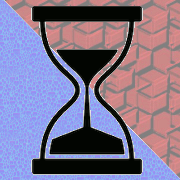

Head Scrap
Stuff here:
- Demo:Ohia
A social network idea. - Text:ChatGPT Chats
Dump of my longer chats with ChatGPT-3.5
Stuff elswhere:
| FighterJet | Earliest (surviving) game I ever made. Remastered in JavaScript. | |
| Road kill | Silly, gory game made by highschool boys. Converted to JavaScript. | |
|  | Contrast-Bath-Timer | 30s ice, 30s heat, 30s ice... makes swollen tendens feel nice |
| Undergrad Sites | I maintained personal websights through college, but social networks completely obsoleted this practice. |